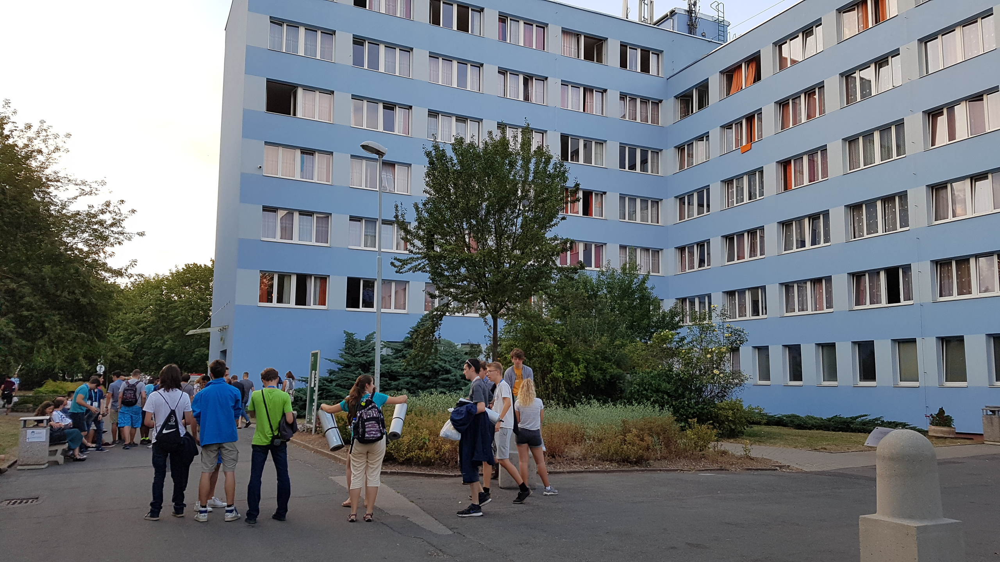
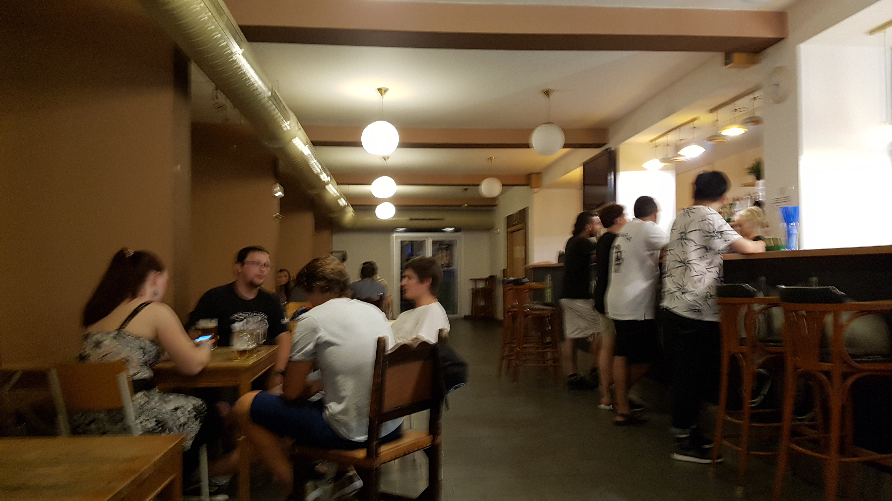

대회_개인전
오전에는 대형 강의실(태어나서 그렇게 큰 강의실은 처음 본다. 수용 인원이 200명은 족히 넘어 보였다. 강의실에 들어서자마자 느낀 위압감은 필자를 긴장 상태에 몰아넣었다.)에서 개인전 대회를 했다. 참고로 언어학 올림피아드는 총 두 번의 시험을 보는데, 하나는 개인전으로 혼자서 5문제를 6시간 동안 풀고 개인 점수에 따라 상을 받은 방식으로 진행되고, 나머지 하나는 단체전으로 4인 1조가 되어(각 나라마다 국가대표 8명이 출전하는데, 4명 4명으로 두 팀이 짜인다. 수상도 당연히 팀 단위로 수여한다.) 1~2문제(말이 한 두 문제지 한 문제 당 꼬리 문제가 굉장히 많다!)를 4시간 동안 푸는 것이다. 개인전 3번은 여러 시행착오 후에 어찌어찌 풀 수 있었고, 나머지는 최대한 할 수 있을 만큼 풀었다. 5번 가족관계 문제는 여름학교에서 연습한 유형 중 하나이긴 했지만 막상 풀기에는 너무 어려웠다.
여름학교에서 한 문제 당 한 시간씩 연습할 때에는 자주 졸고 한 문제를 오래 붙잡고 있는 것이 정말 고통스러웠는데, 실제 대회에서는 6시간이 정말 빨리 갔다! 앞에서 진행 위원들이 칠판에 몇 분이 남아있는지 10분마다 업데이트하면서 적어주었는데, 시간이 줄어드는 속도가 정말 빨랐다. 옆에 일본 국가대표가 앉았는데, 그 분도 열심히 풀더라. 끝나고 'お疲れ様ですた'라고 말을 걸까 했는데 그저께와 마찬가지로 귀찮아서 관뒀다. 나는 복도 쪽에 앉았는데, 복도 건너 독일 국가대표는 6시간 동안 정말 literally 아무것도 하지 않았다. 주변에서 참가자들이 열심히 푸는 것을 계속 지켜보았던 것 같은데, 나이가 꽤 어려보였다.
올해 개인전 문제가 국제언어학올림피아드 공식 웹사이트에 업로드 되어있다! 궁금하다면 http://www.ioling.org/problems/#16 에서 확인할 수 있다.
사실 시험에 관련된 재미있는 일화가 있는데, 원래 개인전 시험 시작 시각이 오전 9시였다. 그래서 당연히 우리 팀은 시험이 치러질 캠퍼스 건물 앞에 10분 일찍 가서 입실이 시작될 때까지 기다리고 있었다. 하지만, 9시가 되었는데도 건물 안에서 들어오라는 신호가 없는 것이다! 게다가 주변 팀들도 이제서야 막 도착하기 시작했고, 심지어 대회 주최측 관계자들이 멀리서 책상과 의자를 들고 오는 것이 보였다. 시험 감독용 의자 및 책상을 운반 중이었던 것으로 생각되는데, 시계는 벌써 9시 10분을 가리키고 있었지만 그들의 얼굴에는 웃음과 여유가 가득했다. 이를 보고 우리 팀원 중 한 명은 내년 한국 용인에서 국제언어학올림피아드가 열릴 때 입실 시각을 정해놓으면 유럽인들은 ‘입실 시각’이라는 개념 자체를 이해하지 못할 수 있다라는 우스갯소리를 했다. 9시 15분이 되어서야 배정받은 고사장에 들어설 수 있었고, 9시 18분에 시험이 시작해 정확히 오후 3시 18분에 시험이 끝났다.
끝나고 와서는 기숙사에서 쉬다가 강의를 들으러 갔다. 코퍼스 언어학과 관련된 강의였던 만큼 집중해서 들으려 하였으나... 교수님께서 말씀하시는 목소리가 너무 작아 잘 들리지 않았고 전체적인 발표에 개연성이 없어 강의의 전체적인 퀄리티는 약간 아쉬웠다.
교수님이 이때 소개해준 코퍼스 분석기가 이것이다: https://voyant-tools.org/ 이때는 코퍼스 언어학에 대해 아는게 없었어서 아 이런게 있구나 정도로 받아들였다. 그런데, 얼마 전 강범모 교수님의 <언어, 컴퓨터, 코퍼스 언어학> 책을 읽으면서 코퍼스 분석기에 대한 기본적인 지식을 얻을 수 있었는데, 아는 상태에서 다시 보니 이것이 정말 좋은 툴이라는 것을 새삼 깨달았다.
강의 후 저녁을 먹고 기숙사에 돌아와니 7시 정도였다. 방에 들어가 침대에서 몇 시간 동안 뒹굴거리며 룸메와 놀았다.
그리고 밤에는 우리 팀 친구들끼리 기숙사 1층 펍에 모여서 피자와 맛있는 음료수를 시키고 카드게임을 하면서 늦은 밤까지 펑펑 놀았다! 떨리는 마음으로 생전 처음 먹어본 그 음료수는 생각보다 정말 맛있었다...!